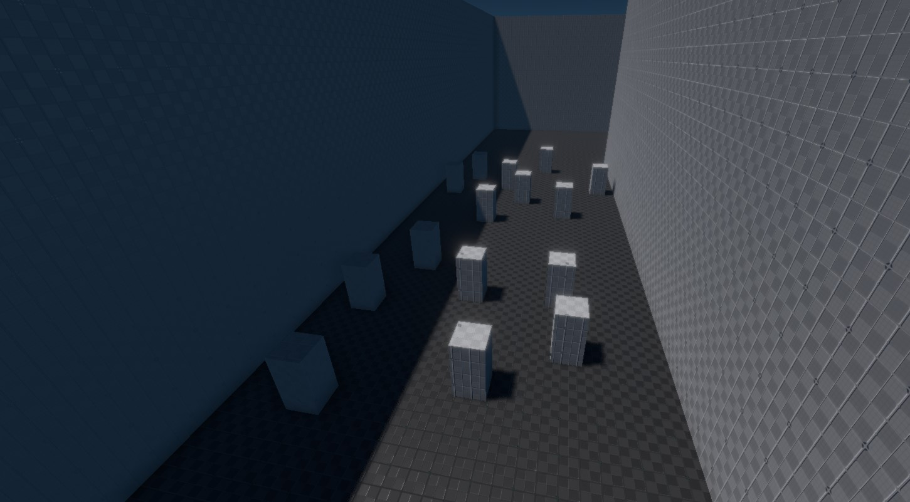

Directional Light Component
The directional light component adds a light source that illuminates the entire scene from one direction. This is typically used for sun light. Since directional light affects everything, it isn't possible to cast shadows everywhere. Instead, shadows are restricted to a region around the camera and objects that are too far away from the camera, won't cast shadows.

You can use multiple directional light sources, for example if you want directional ambient light, however, for performance reasons only one directional light should cast shadows.
Component Properties
See this page for shadow related component properties.
-
LightColor, Intensity: The color and brightness of the light. -
NumCascades: How many shadow cascades to use. The more cascades are used, the crisper shadows close to the camera become. However, each cascade costs additional performance. -
MinShadowRange: How far from the camera the light should cast shadows. A low value means that only objects a short distance away will cast shadows, and objects farther away won't. -
FadeOutStart: At what fraction of the shadow range it should start to fade out. For instance, if theMinShadowRangeis set to 10 meters, andFadeOutStartis set to 0.8, then the shadows will start to fade out at a distance of 8 meters. -
SplitModeWeight: TODO -
NearPlaneOffset: TODO